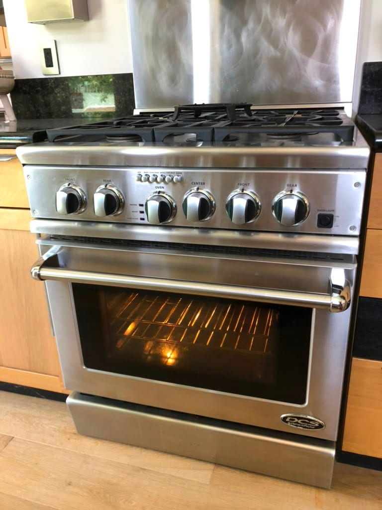
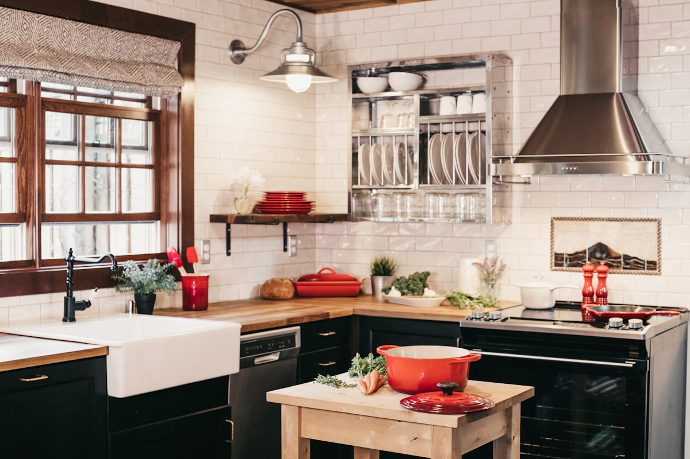
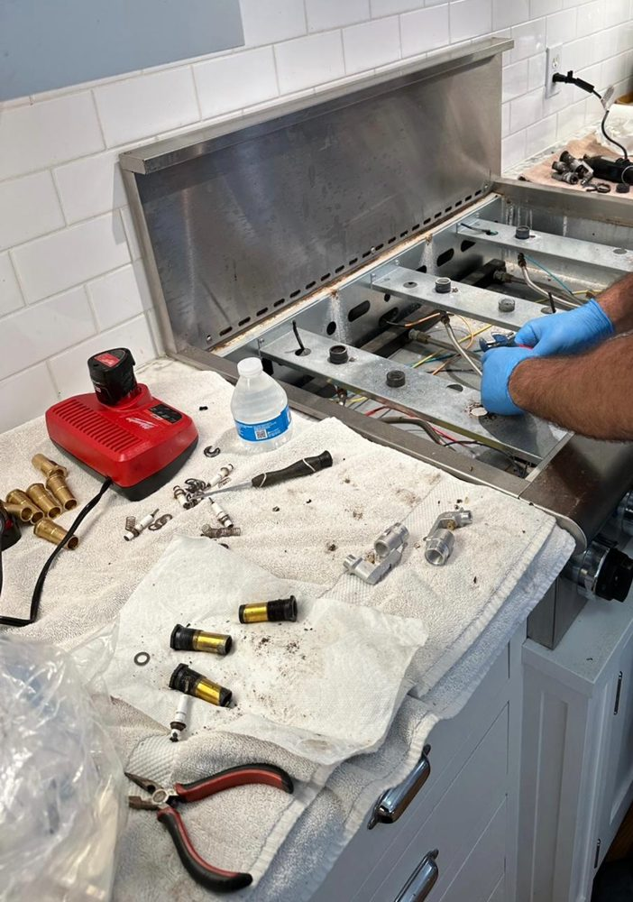
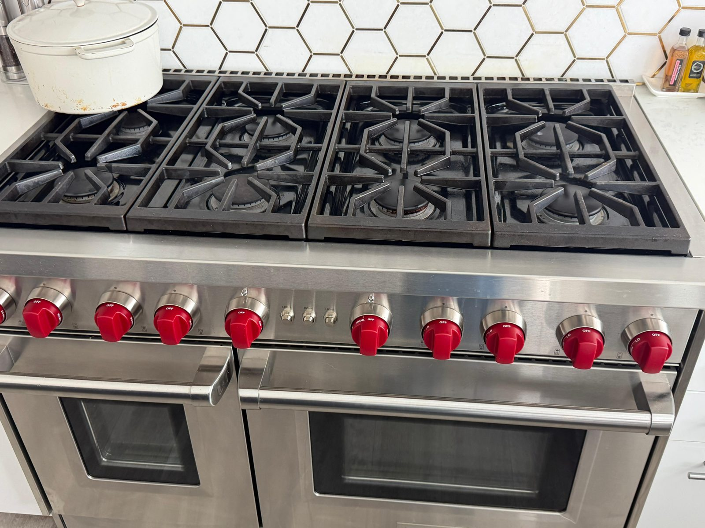

10 Oven, Stove & Range Articles

Oven & Stove RepairJuly 17, 2026
DCS Range & Oven Repair in Newport Beach, CA
Burners light and the broiler works, but the DCS oven won't bake? The 6 issues we see most on DCS professional ranges in Newport Beach, from a weak bake igniter to coastal corrosion, and how each is fixed.
Read more →

July 3, 2026
Wolf Oven Not Heating? The Bake Igniter and 4 Other Causes
A cold Wolf oven with a working cooktop almost always points to the bake igniter. The five causes to know, the safe checks you can do yourself, and repair cost ranges in Orange County.
Read more →
May 25, 2026
Gas Range vs Electric Range Repair Costs in Orange County (2026)
Repair costs compared side by side for the most common gas and electric range failures. Typical price ranges, premium brand notes, and when to repair vs replace.
Read more →
May 25, 2026
Viking Oven Not Heating? Causes, DIY Checks and Repair Costs
Viking oven not heating in Orange County? Walk through the most likely causes: bake element, gas igniter, convection fan, temperature sensor. Includes repair costs and DIY checks before calling a tech.
Read more →

May 25, 2026
Stove Burner Not Lighting After Cleaning? 3 Causes and Quick Fixes
Usually moisture, a misaligned cap, or clogged ports. Step-by-step fix you can do in 10 minutes, and when to call a technician in Orange County.
Read more →

Symptom GuideMay 25, 2026
Gas Stove Igniter Not Working? 5 Causes and Fixes
Rapid clicking, no spark, or one burner dead silent? The five most common causes, what you can check yourself, and what each repair costs in Orange County.
Read more →

May 20, 2026
Wolf Range Igniter Not Working? 4 Causes and How to Fix It
The burner clicks but won't catch. Four causes from a dirty ceramic tip to a failed spark module, what you can check yourself, and what each repair costs in Orange County.
Read more →
May 1, 2026
Oven Not Heating in Tustin? What to Check Before Calling a Pro
Oven cold before dinner? Learn what's most likely wrong, bake element, igniter, or thermostat, and what you can check yourself first.
Read more →
April 28, 2026
Oven Repair in Laguna Niguel, CA: What to Expect
Oven not heating or running way off temperature? Learn the most common causes for gas and electric ovens and what a repair visit looks like.
Read more →
April 23, 2026
Oven Repair in Santa Ana, CA: What to Expect
Oven not heating, burner won't ignite, or temperature running off? Learn the most common oven problems Santa Ana homeowners face and what a professional repair visit looks like.
Read more →